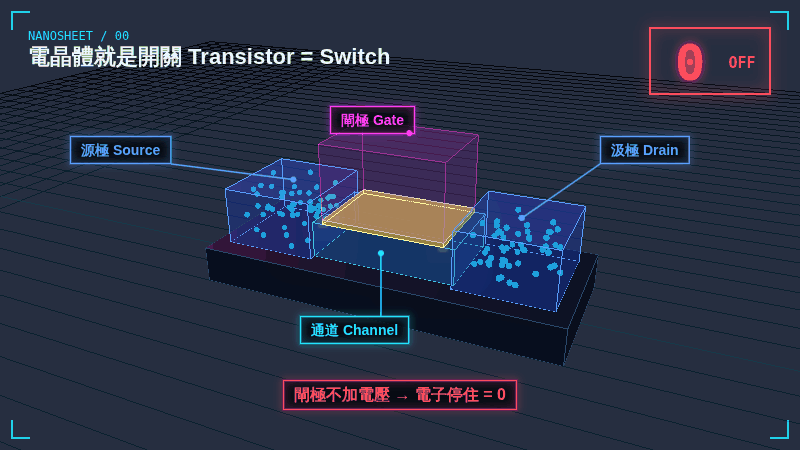
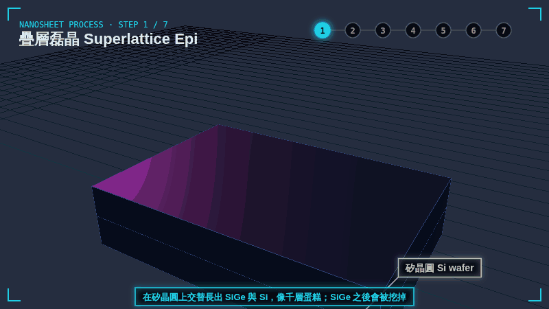
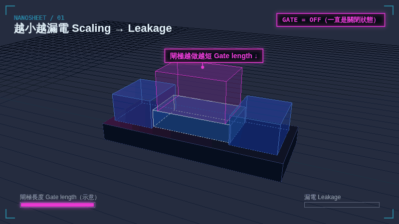
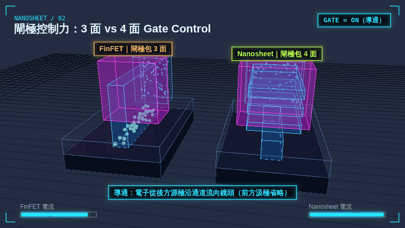
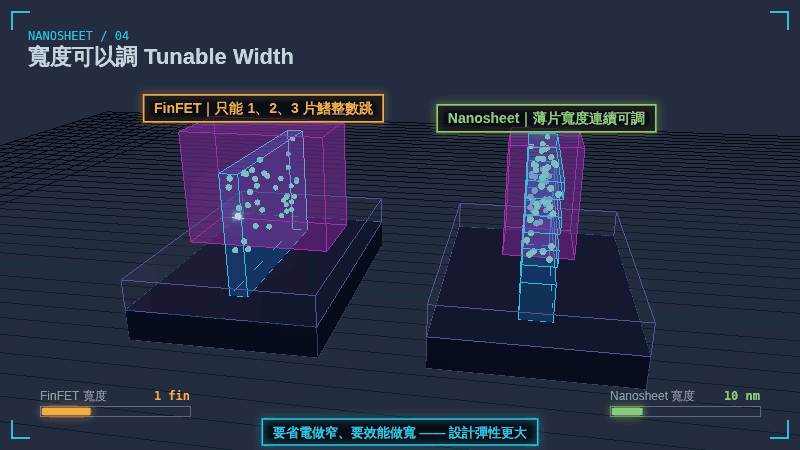
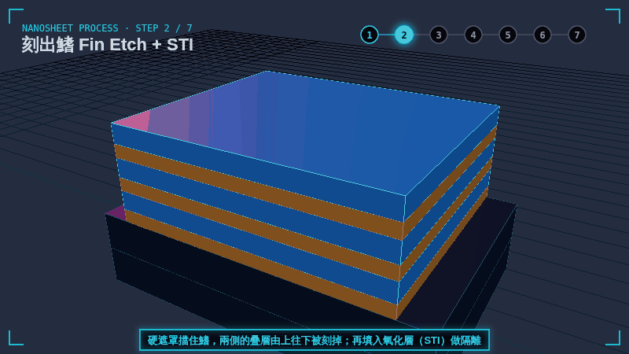
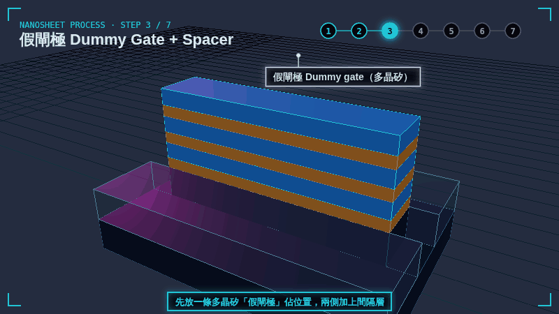
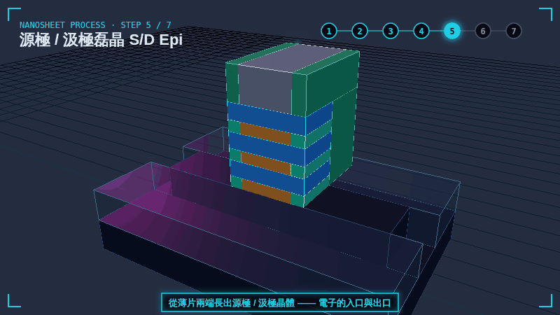
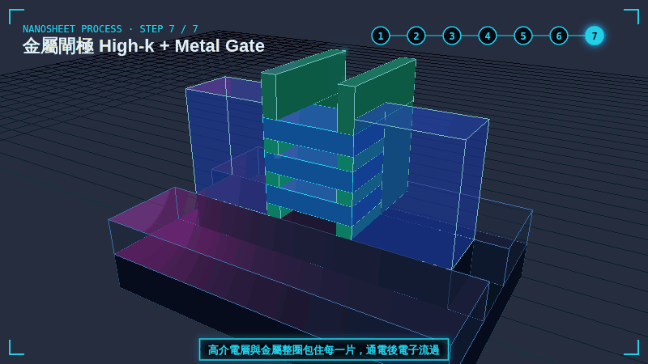

GIF 00 · 4 秒
電晶體就是開關 Transistor = Switch
閘極（Gate）加電壓，電子就能從源極（Source）流到汲極（Drain），代表 1；不加電壓，電子停住，代表 0。CPU 就是幾百億個這種開關。
下載 1080P GIF（3.9 MB）GAA TRANSISTOR / FOR IT PEOPLE
晶片裡最小的零件是電晶體 —— 一個由電壓控制的開關。這一代的難題是：開關越做越小，就越「關不緊」。這裡用 13 張 3D 動畫 GIF，先看為什麼業界從 FinFET 換成 Nanosheet（GAA 環繞閘極），再用 7 個步驟看 Nanosheet 是怎麼做出來的。

PART 1 / WHY
一句話：閘極要把通道「包得更完整」，才能在更小的尺寸下關得緊、又跑得快。

GIF 00 · 4 秒
閘極（Gate）加電壓，電子就能從源極（Source）流到汲極（Drain），代表 1；不加電壓，電子停住，代表 0。CPU 就是幾百億個這種開關。
下載 1080P GIF（3.9 MB）
GIF 01 · 6 秒
開關越做越小，閘極越短，對通道的控制力就越弱。即使「關閉」，仍有電子偷偷溜過去，這就是漏電（leakage）：手機待機也在耗電、晶片發熱。
下載 1080P GIF（4.7 MB）
GIF 02 · 6 秒
FinFET 的閘極包住鰭的 3 面，鰭底部管不到，關閉時仍會漏電。Nanosheet 是 GAA（Gate-All-Around），閘極整圈包住每一片通道，關得更緊。
下載 1080P GIF（7.1 MB）GIF 03 · 6 秒
同樣的佔地面積，往上疊 3 片通道，就像 3 層高速公路同時通車：電流（drive current）更大，開關速度更快。
下載 1080P GIF（9.0 MB）
GIF 04 · 6 秒
FinFET 的通道寬度只能用「幾片鰭」整數調整；Nanosheet 的薄片寬度可以連續調整。要省電就做窄、要效能就做寬，設計彈性更大。
下載 1080P GIF（6.6 MB）| 比較項目 | FinFET 鰭式 | Nanosheet（GAA） |
|---|---|---|
| 閘極包住通道 | 3 面 | 4 面（整圈） |
| 關閉時漏電 | 鰭底部較難控制 | 更低 |
| 電流（同面積） | 靠增加鰭的數量 | 疊多片薄片 |
| 通道寬度調整 | 只能整數片鰭 | 連續可調 |
| 製程難度 | 成熟 | 更高：要挖空 SiGe、做內間隔層 |
PART 2 / HOW
真實製程有上百道工序，這裡只保留和 FinFET 最不一樣的關鍵步驟。核心概念是「先佔位、後挖空」：先用 SiGe 佔住薄片之間的空間，最後再把它挖掉、填進金屬閘極。動畫中的閘極在鰭的正面剖開，方便看到裡面的疊層。
STEP 1 / 7
在矽晶圓上交替長出 SiGe 與 Si，像千層蛋糕。Si 是之後的通道；SiGe 是「犧牲層」，先佔位置、最後會被挖掉。
下載 1080P GIF（3.9 MB）
STEP 2 / 7
用蝕刻把整片疊層刻成長條的鰭（跟 FinFET 一樣先做鰭，只是這根鰭是千層的），兩側再填入氧化層 STI 做元件之間的隔離。
下載 1080P GIF（4.1 MB）
STEP 3 / 7
先放一條多晶矽做的「假閘極」橫跨鰭，標出未來閘極的位置，兩側加上間隔層（spacer）。真正的金屬閘極最後才換上去。
下載 1080P GIF（4.4 MB）STEP 4 / 7
把源極 / 汲極區的疊層挖掉，再讓 SiGe 從側面往內縮一點，補上絕緣的內間隔層。之後閘極和源汲極之間就不會短路，寄生電容也更小。
下載 1080P GIF（4.5 MB）
STEP 6 / 7
整個製程最關鍵的一步：拿掉假閘極，用只吃 SiGe、不吃 Si 的化學蝕刻（高選擇比、等向性）把 SiGe 挖空，Si 薄片就懸空了。
→ 這一步用的就是「化學蝕刻」：可以搭配 半導體蝕刻原理 一起看。
下載 1080P GIF（5.3 MB）
STEP 7 / 7
在懸空的薄片四周先鍍上高介電層（high-k），再把金屬填滿所有空隙，閘極就整圈包住每一片。通電後，電子同時流過 3 片通道。
下載 1080P GIF（6.4 MB）NEXT
在 NMOS 和 PMOS 的薄片之間插一道絕緣牆，讓兩種電晶體可以靠得更近，進一步縮小標準單元面積。
把 NMOS 和 PMOS 直接上下疊在一起，從「平面上並排」變成「垂直堆疊」，是更下一代的方向。
動畫為教學用示意：尺寸比例、層數與製程細節都經過簡化（例如省略層間介電層 ILD、接觸窗與金屬導線），數字也不是特定製程的規格。網頁上顯示的是 800×450 的預覽；按「下載 1080P GIF」可取得 1920×1080 的原檔，循環播放，可直接放進簡報。